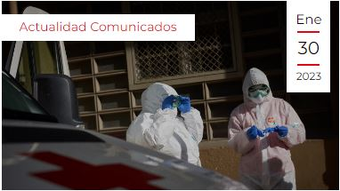
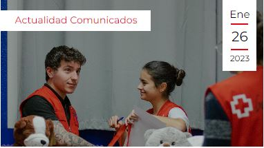
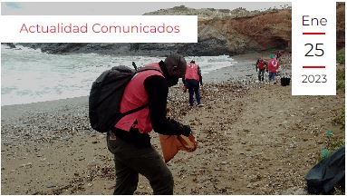

Madrid, 30 de enero de 2023. Ningún terremoto, sequía o huracán en la historia registrada ha cobrado más vidas que la pandemia de la COVID-19, según la red de respuesta a desastres más grande del mundo, la Federación Internacional de Sociedades de la Cruz Roja y de la Media Luna Roja (FICR).
En los últimos seis meses de 2022 se han recogido y entregado los juegos y juguetes a 36.500 niños y niñas, con especial énfasis en las fiestas de final de año
Desde hace siete años Cruz Roja y el Proyecto LIBERA llevan a cabo un programa para cuantificar y clasificar los residuos presentes en las playas, ríos, montes y mares, con el fin de evitar su deterioro e impulsar la conciencia medioambiental acerca de la necesidad de cuidar y preservar la naturaleza.
personas beneficiarias al año
personas voluntarias
¿Qué sucede cuando unes la tecnología con la música? 'Banda Sonora Vital' se trata de un proyecto que persigue mejorar la memoria musical de personas con Alzheimer. Por sus valores sociales e innovación fue reconocida en los Premios Cruz Roja Tecnología Humanitaria, en la categoría de Impacto."
Los Reyes han recibido en el palacio de la Zarzuela a nuestra Fundación, de la cual ostentan la Presidencia de Honor. El propósito es impulsar en la sociedad Pensamiento Humanitario que contribuya a cambiar mentalidades en en beneficio de las personas. Leer Más https://t.co/1LpzsCgwnF
01 FEB© Cruz Roja Española 2023. Todos los derechos reservados. Pulse aquí para consultar los ASPECTOS LEGALES
Agencia de Colocación autorizada con el número 9900000098
Contacto Política de privacidad Política de Cookies